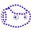
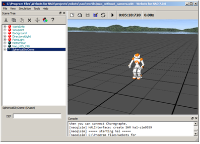
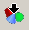
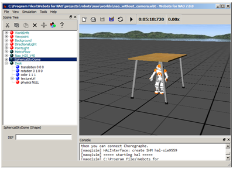
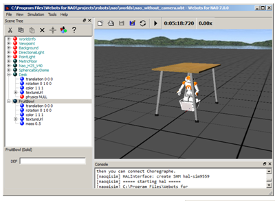
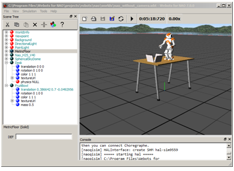
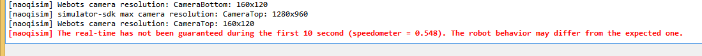
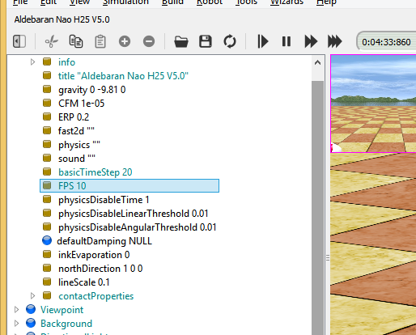

Webots¶
What is Webots¶
Since Webots 8, a module named nao_qi is available for the owners of a Webots for NAO license. It provides predefined NAO simulations and with their ready-to-use controllers.
Warning
Webots for NAO license owners only have access to a subset of Webots features. They cannot use other robots nor create new robot controllers.
Installing Webots¶
To install Webots:
| Step | Action |
|---|---|
Retrieve the installer Webots 8 for your operating system:
You can download the latest release from SoftBank Robotics Community website. For further details, see: Downloading & Installing SoftBank Robotics Software. |
|
| Uninstall completely any old version of Webots. | |
Launch the installer then follow the step-by-step instructions. For further details or in case of trouble, see the Chapter 1: Installing Webots in Webots online user guide here: http://www.cyberbotics.com/guide/ |
Getting started¶
Launching a simulated robot¶
| Step | Action |
|---|---|
| Launch Webots. | |
Choose File > Open Sample World... and select the entry |
Connecting Choregraphe to the simulated robot¶
| Step | Action |
|---|---|
| Launch Choregraphe. | |
Choose Connection > Connect to or click the  Connect to
button. Connect to
button. |
|
Select your simulated robot (the name should include the name of your computer). Its icon should be: In Choregraphe, you can now:
|
Testing a behavior in Webots¶
| Step | Action |
|---|---|
Make sure you have launched a simulated robot and have connected Choregraphe to it. For further details see: |
|
In Choregraphe, create a behavior. For example, test the Tai Chi Chuan box. |
|
Make sure the Stiffness is on or click the  Wake Up button. Wake Up button. |
|
Click the |
|
Try to modify your point of view. For further details, see: How do I navigate in 3D world? in the Help menu. |
 Play button and follow the behavior both in Choregraphe
and in Webots.
Play button and follow the behavior both in Choregraphe
and in Webots.{kind=link}
{kind=link}
{kind=link}
{kind=link}
{kind=link}
{kind=link}
Customizing NAO’s worlds¶
Adding an object¶
Let’s add a table, for example:
| Step | Action |
|---|---|
Make sure the simulation is stopped. Otherwise, choose, Simulation > Stop then File > Revert World. |
|
In the Scene Tree, select the last node.  |
|
Click the  Add a new object button and select this object:
|
|
Click the Add button.  |
{kind=link}
{kind=link}
{kind=link}
Moving objects¶
Let’s play with objects in order to learn how to move them.
| Step | Action |
|---|---|
Make sure the simulation is stopped. Otherwise, choose, Simulation > Stop. |
|
| In the Scene Tree, select the last node. | |
Click the Add a new object button and select this object:
|
|
Click the Add button.  |
|
Try to put the fruit bowl on the table. For further details, see: How do I move an object? in the Help menu.  |
{kind=link}
{kind=link}
NAO and Webots¶
Read the Section 8.2 Using the NAO robot of the Webots user guide to learn more about managing one or several NAOs using Webots.
Tips¶
I can’t see my simulated robot in the Choregraphe Browse robots panel.¶
Make sure the simulation is not stopped in Webots.
Troubleshooting¶
If the simulation is slow, you will have a warning displayed in the console of Webots:
{kind=link}
A possible approach to improve the simulation is to reduce the number of frames sent to NAOs cameras by changing the “FPS” field of the “WorldInfo” node in the Scene Tree:
{kind=link}
Try some low values (e.g. 1, 5 or 10) to speed up the simulation.